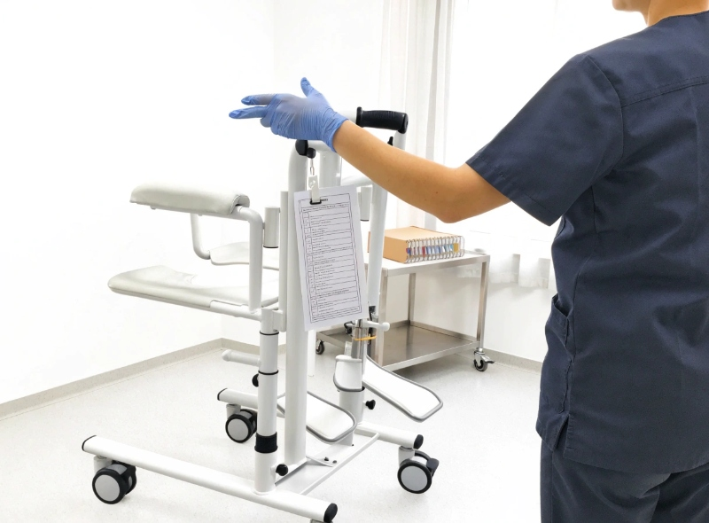
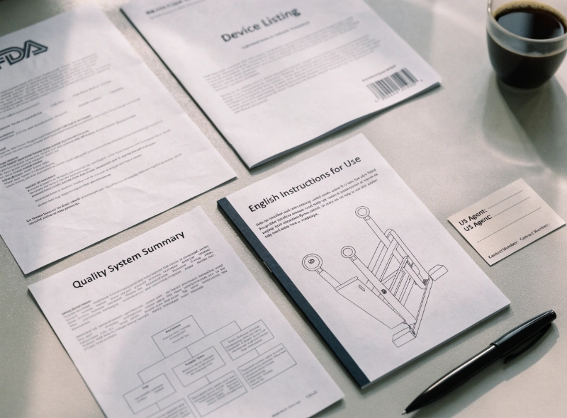

FDA certification for patient lifts: what it covers and what it doesn't
"FDA certified" is a phrase buyers use, not a phrase the FDA uses. This guide breaks down what the FDA actually regulates for a patient lift, what clearance means, what it does not mean, and the 5 documents you should ask every supplier to produce before you sign the PO.
What's in this guide
- What "FDA certified" actually means for a patient lift — and why the FDA itself never uses that phrase
- The three terms that actually matter: Establishment Registration, Device Listing, 510(k) clearance (or exemption)
- What the FDA's review covers — design, manufacturing, labeling, post-market surveillance
- What the FDA does NOT cover — training, maintenance, facility policy, operator competency
- The 5 documents to demand from any supplier before signing a purchase order
- The 3 most common FDA-related procurement mistakes — and how to avoid them
Every week, we get an RFQ that says, in some form or another: "Please confirm your patient lift is FDA certified." The honest answer is that no patient lift anywhere is "FDA certified." That is not how the FDA works. The FDA clears devices, registers establishments, and lists products — it does not certify them. The phrase is procurement shorthand, and it is fine to use it conversationally. But when you are signing a six-figure PO for a 100-bed facility, you need to know what the actual regulatory status is, what it covers, and — more importantly — what it does not cover.
This guide is written from the manufacturer side of the table. We build patient lifts, we hold an Establishment Registration, we maintain our Device Listing, and we have shipped units into US hospitals and long-term care facilities. We are not a law firm and this is not legal advice. But if you are a procurement manager, hospital facility director, or nursing home administrator trying to make sense of what FDA status you should be checking for before you source a patient lift — this is the guide we wish someone had handed us when we started.
What "FDA certified" actually means for a patient lift
The FDA regulates medical devices sold in the United States under the Federal Food, Drug, and Cosmetic Act. Devices are sorted into three risk classes — Class I, Class II, and Class III — and the regulatory burden increases with the class.
A floor-style patient lift — the kind mounted on casters, used to transfer a resident between bed, wheelchair, and commode — is regulated by the FDA as a Class I medical device under 21 CFR 880.5500 (Mechanical Patient Lift). The FDA's product code for non-AC-powered mechanical patient lifts is typically IOR, with related codes HGC (powered, AC) and FPR (stand-assist / sit-to-stand) used for variants. Class I is the lowest-risk tier — the same tier as manual wheelchairs, elastic bandages, and examination gloves.
Here is the part that surprises most buyers: most Class I patient lifts are 510(k) exempt. That means the manufacturer does not submit a 510(k) premarket notification to the FDA before going to market. The FDA does not "approve" the specific device. The manufacturer self-classifies the device, registers their establishment, lists the product, and is then responsible for following the controls in 21 CFR 820 (Quality System Regulation) and reporting adverse events under 21 CFR 803 (Medical Device Reporting).
So when a supplier says "FDA certified," what they typically mean — or what they should mean — is one of three things, which are not the same thing:
The three regulatory states a patient lift can be in:
- FDA-registered establishment, FDA-listed device, 510(k)-exempt. This is the most common state for a Class I manual or hydraulic patient lift. The supplier has done their homework, but the FDA has not "approved" the specific product.
- FDA-registered establishment, FDA-listed device, 510(k) cleared. This is the state for some powered lifts with measurement features, software, or powered standing-assist functions that fall into Class II. The supplier has submitted a 510(k) and received a clearance letter (a "K number").
- Not registered, not listed, claims "FDA compliant" anyway. Walk away. This is the supplier who has read the FDA website, decided they are "exempt," and skipped the registration step. They are technically in violation of US law and the unit may be held at customs.
The first state is fine and legitimate for the vast majority of nursing-home floor lifts. The second is what you should expect if you are buying a powered stand-assist lift with built-in scale or a powered lift that classifies as Class II. The third is what you should be filtering out.
FDA registration vs FDA clearance vs FDA certification — the terms, precisely
Procurement teams use these words interchangeably. The FDA does not. If you are auditing a supplier, the words matter — here is what each one actually is.
| Term | What it is | Issued by FDA? | Document you should see |
|---|---|---|---|
| Establishment Registration | The manufacturer's facility is listed in the FDA's Establishment Registration database. Required for any foreign manufacturer exporting devices to the US. | Yes — issued as a 10-digit registration number. | FDA Establishment Registration Number (starts with 300XXXXXX for foreign sites). Renewable annually. |
| Device Listing | The specific device (the patient lift model) is listed under the manufacturer's registration. Tied to a product code (e.g. IOR) and regulation (e.g. 21 CFR 880.5500). | Yes — issued as a Device Listing Number (D or listing number). | Device Listing Number, plus the product code and regulation number. |
| 510(k) Clearance | For Class II devices, the FDA has reviewed a premarket notification and issued a "substantially equivalent" clearance letter. Identified by a K number (e.g. K123456). | Yes — a clearance letter with a K number. | 510(k) clearance letter and K number. Only applies if the device is Class II. |
| 510(k) Exempt | For most Class I patient lifts, no 510(k) is required. The device is "exempt" — meaning the manufacturer does not need to submit a 510(k), but still must register and list. | No — exemption is by regulation, not a letter. | No 510(k) document. You confirm exemption by checking 21 CFR 880.5500 against the device description. |
| FDA Certified | Not an FDA designation. Procurement shorthand. Has no legal meaning. | No. | No document. If a supplier uses this phrase, ask them to translate it into registration number + device listing + (if applicable) 510(k) K number. |
The bottom line: when a supplier says "FDA certified," the right next question is "Can you send me your Establishment Registration Number and Device Listing Number?" If they can produce those two documents, the unit is legal to import. If they cannot, the phrase is window dressing.
What the FDA clearance / regulation actually covers
When the FDA regulates a patient lift, it covers four specific areas at the point of market entry. These are the things the manufacturer is on the hook for — and the things you, as a buyer, can reasonably rely on the supplier to have done.
1. Design controls (21 CFR 820.30)
The manufacturer must have documented design inputs (intended user, intended use environment, weight capacity, dimensional requirements), design outputs (drawings, BOM, test results), and a design history file. For a patient lift, this is what confirms the 150 kg capacity rating is the result of a tested design, not a marketing number.
2. Manufacturing quality system (21 CFR 820)
The Quality System Regulation covers supplier qualification, incoming inspection, production controls, traceability, finished-device testing, and CAPA (corrective and preventive action). The unit you receive is supposed to have been built under a controlled, auditable process — not assembled ad hoc. Foreign manufacturers are subject to FDA inspection, and inspections can be unannounced.
3. Labeling (21 CFR 801)
The labeling — meaning the label on the device, the Instructions for Use (IFU), and any marketing claims — must match the cleared / listed device. Claims about weight capacity, intended patient population, intended use environment (home, long-term care, hospital), and contraindications must be consistent with the design file. A supplier claiming "hospital-grade" on a lift cleared for home and long-term care use is out of compliance.
4. Post-market surveillance (21 CFR 803, 21 CFR 806)
Once the device is on the market, the manufacturer must report serious adverse events (MDR — Medical Device Reporting) and submit corrections and removals (21 CFR 806). This is the mechanism that catches design defects after launch. A supplier with a clean MDR history is not necessarily a better supplier than one with a few reports — but a supplier who does not know what MDR is, or cannot tell you how to file a complaint, is a red flag.
Those four pillars — design, manufacturing, labeling, post-market — are what "FDA regulated" buys you. They are the manufacturer's responsibility, not yours. Your job as a buyer is to confirm the supplier is actually inside that regulatory framework, not just claiming to be.
What the FDA clearance does NOT cover
This is the section that procurement teams under-read. The FDA's authority ends at the point of sale. Once the lift is inside your facility, the regulatory burden shifts — and most of it shifts to you.
The FDA does NOT cover:
- Caregiver training. The FDA does not certify your staff's ability to use the device. Your facility is responsible under OSHA, state nurse aide training requirements, and the manufacturer's IFU.
- Preventive maintenance schedules. The IFU will specify lubrication, caster checks, and hydraulic leak tests. The FDA does not enforce that you do them. Your facility's risk register and accreditation body (Joint Commission, CMS, state health department) do.
- Facility transfer policies. Who is allowed to use the lift, how many caregivers must be present, what to do for bariatric patients — those are your facility's policies, not the FDA's.
- Operator competency assessment. The FDA does not test your CNAs. The manufacturer's IFU will specify competency, but enforcement is on your facility's Director of Nursing and your accreditation surveyor.
- In-service date. The FDA does not know when the unit entered service. For 5-year depreciation, recall tracking, and service-life planning, that is your asset register.
- End-of-life disposal. The FDA does not govern what happens to the lift after it is retired. Your local medical waste and metals recycler do.
The way we put it to buyers: FDA status is the floor, not the ceiling. It confirms the device was designed, built, labeled, and is being tracked by a manufacturer who is inside the US regulatory system. It does not confirm that your facility is using it safely. The latter is a competency question, and competency is built through training and SOPs — not purchased with a purchase order.

How to verify a supplier's FDA status — the 5-step checklist
This is the checklist we hand to buyers who ask us how to audit a patient lift supplier. Run it on us. Run it on any supplier you are considering.

5-step FDA verification checklist
- Ask for the Establishment Registration Number. A 10-digit number. For foreign manufacturers, it will start with 300XXXXXX. Ask for the issue date and the annual renewal date (registrations must be renewed between October 1 and December 31 each year).
- Ask for the Device Listing Number. This is the proof that the specific patient lift model is listed under the establishment's registration. Ask for the product code (for patient lifts: typically IOR, HGC, or FPR) and the regulation number (typically 21 CFR 880.5500 for mechanical patient lifts).
- Confirm whether 510(k) applies. For a Class I non-powered floor lift, the answer should be "510(k) exempt under 21 CFR 880.5500." For a powered lift with measurement or software features, ask for the K number. If the supplier says "510(k) cleared" but cannot produce a K number, treat it as a misstatement until proven otherwise.
- Ask for the Design History File summary. Not the full DHF — that is confidential. But a summary listing design inputs (intended user, use environment, weight capacity, dimensional requirements) and reference test reports (fatigue test, static load test, stability test). A real manufacturer can produce this in 48 hours. A trading company cannot.
- Cross-check the registration number in the FDA database. The FDA's Establishment Registration search is public. Type in the registration number and confirm the supplier's name, address, and current registration status match what they sent you.
If a supplier clears all five steps in under a week, they are inside the regulatory system. If they stall, send generic "FDA compliant" PDFs that look like marketing brochures, or cannot tell you what 21 CFR 880.5500 is — those are answers, and the answer is no.
Procurement: what to ask the supplier for before you order
Here is the document pack you should request with every RFQ — and the documents we, as a manufacturer, expect a serious buyer to ask for. If a buyer does not ask, we send them anyway, because we know the alternative is a customs hold.
Document pack for the PO file:
- FDA Establishment Registration Number — with annual renewal confirmation.
- FDA Device Listing Number — with the product code and regulation number stated explicitly.
- 510(k) clearance letter — only if the device is Class II. For Class I 510(k)-exempt lifts, a one-line statement citing 21 CFR 880.5500 is sufficient.
- US Agent appointment letter — for foreign manufacturers, the FDA requires a US Agent. Ask who it is and how to reach them. This is your domestic escalation contact if there is a field action.
- Instructions for Use (IFU) in English — the cleared labeling, including intended use, contraindications, weight capacity, warnings, and maintenance interval.
- Labeling and labeling claims — confirm the weight capacity and intended use environment stated in the IFU match what was listed. Discrepancies are a red flag.
- MDR history and complaint handling process — ask how to file a complaint and how adverse events are reported. A real manufacturer has a documented process; a reseller will say "email us."
- Quality System Statement — a one-page summary of the QMS under 21 CFR 820. ISO 13485 is the international equivalent and is acceptable as evidence of an equivalent system, but it does not replace FDA Establishment Registration.
That pack fits in a 5-page PDF. It is not a heavy ask. A real manufacturer has it on file. A trading company does not.
The 3 most common FDA-related procurement mistakes
We see these three in roughly equal measure. They are not exotic compliance failures — they are the predictable result of buyers using "FDA certified" as a checkbox instead of asking what it actually means.
Mistake 1: Accepting "FDA certified" as a phrase instead of a registration number
The phrase proves nothing. A supplier who says "FDA certified" and cannot produce an Establishment Registration Number and a Device Listing Number is either a trading company reselling someone else's product (and may not be able to provide the documents at all) or a manufacturer who has not registered (and is shipping non-compliant product). In both cases, your shipment can be held at US customs, and your facility is exposed. The fix is simple: require the registration number before the PO is signed, not after the unit lands.
Mistake 2: Assuming FDA clearance means "training, maintenance, and use policy" are covered
A buyer receives the lift, deploys it on the floor, and assumes the FDA's involvement means safe operation is built in. It is not. The FDA covers design and manufacturing — it does not cover whether your CNA was trained, whether the lift was on a maintenance schedule, or whether two caregivers were present for the transfer. When an incident happens, the post-incident review looks at the IFU (FDA-regulated), the training record (your facility), the maintenance log (your facility), and the transfer policy (your facility). The supplier's FDA status will not absorb your facility's liability for a competency gap.
Mistake 3: Confusing 510(k) clearance with FDA approval
Even when a 510(k) is required and obtained, the FDA does not "approve" the device. 510(k) clearance means the FDA has determined the device is substantially equivalent to a legally marketed predicate device. It is not a safety approval, it is not an efficacy approval, and it is not a guarantee of clinical performance. For Class I 510(k)-exempt lifts, the FDA has not reviewed the device at all — the manufacturer has self-classified it under the regulation. The right framing is "FDA-listed and registered, 510(k)-exempt under 21 CFR 880.5500" — not "FDA approved."
If your facility's internal compliance language still says "FDA approved patient lift," fix the language. It costs nothing, and it is what your risk register, your surveyor, and your legal team will look for.
FAQ
Is a patient lift FDA certified or FDA cleared?
Most floor-style patient lifts for nursing home and hospital use are regulated by the FDA as Class I medical devices with 510(k) exemption. The correct regulatory term is "cleared" (or "exempt" from 510(k) for Class I), not "FDA certified." "FDA certified" is informal shorthand buyers use — it is not a label the FDA itself issues.
What is the difference between FDA registration, clearance, and certification?
Registration means the manufacturer's facility is listed in the FDA Establishment Registration database. Clearance (or 510(k) clearance, or 510(k)-exempt Class I status) means the device itself has been authorized for the US market. "Certification" is a colloquial term, not an FDA designation. For patient lifts, you need both a registered establishment and a cleared (or exempt) device listing.
Does FDA clearance cover training, maintenance, and facility use policies?
No. FDA clearance reviews design, manufacturing, labeling, and intended use at the point of sale. It does not cover how your staff are trained, how the device is maintained, or what your facility's transfer policy says. Those are governed by OSHA, state health departments, your facility's risk register, and the manufacturer's IFU.
How do I verify a patient lift supplier's FDA status?
Ask the supplier for their FDA Establishment Registration Number (10-digit, starts with 300XXXXXX for foreign manufacturers), their Device Listing Number, the product code (for patient lifts typically FDA product code IOR, HGC, or FPR depending on lift type), and the regulation number (21 CFR 880.5500 for mechanical patient lifts). Cross-check the registration number in the FDA Inspection Classification Database.
Can a supplier claim FDA compliance without 510(k)?
Yes, if the device is Class I and 510(k)-exempt. Most non-sterile, non-measuring, non-software patient lifts fall into this category. The supplier still needs Establishment Registration and Device Listing. If a supplier says "FDA certified" but cannot produce a registration number and a device listing, walk away.
Verify, don't trust the phrase
"FDA certified" is a procurement phrase, not a regulatory one. The FDA regulates patient lifts through Establishment Registration, Device Listing, the Quality System Regulation, and — only sometimes — 510(k) clearance. As a buyer, your job is not to trust the phrase; it is to demand the documents: registration number, listing number, product code, regulation number, IFU, US Agent, and a real answer on MDR.
And once the lift is on your floor, remember that the FDA's role is largely done. Training, maintenance, transfer policy, and operator competency are on your facility. That is not a gap in the regulation — that is the regulation working as designed. The FDA covers the device. You cover the use.
Need the FDA document pack for our patient lifts?
Our standard procurement pack includes Establishment Registration Number, Device Listing Number, product code and regulation number, English IFU, US Agent contact, and a one-page QMS summary. Request it before your next PO — we send it inside 48 hours.
Request the FDA packThis article is for procurement guidance only and is not legal advice. The regulatory citations (21 CFR 880.5500, 21 CFR 820, 21 CFR 801, 21 CFR 803, 21 CFR 806) are accurate as of the publication date. Always confirm current FDA guidance and consult your regulatory counsel for facility-specific decisions.